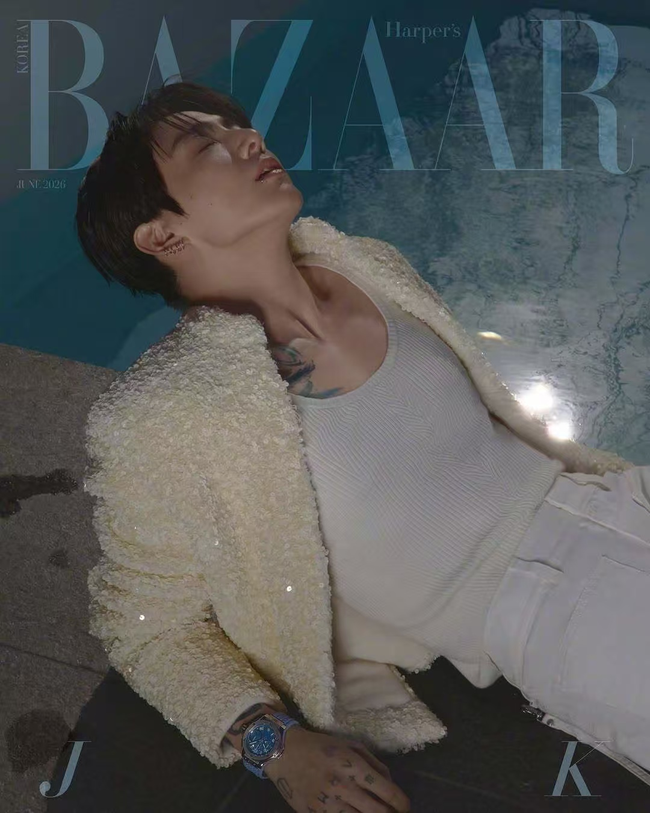

AFTER
DARK
JUNG KOOK · 2026
JK
THE TEMPERATURE02
VOLUME 01 · 12 IMAGES

NOCTURNE — WATCH THE LIGHT MOVE
A quiet frame before the pulse accelerates.
The page becomes a stage.
TWELVE FRAMES.
ONE NIGHT IN MOTION.
AFTER DARK
AN INTERACTIVE PHOTO VOLUME拖动书页或使用键盘 ← → 翻页